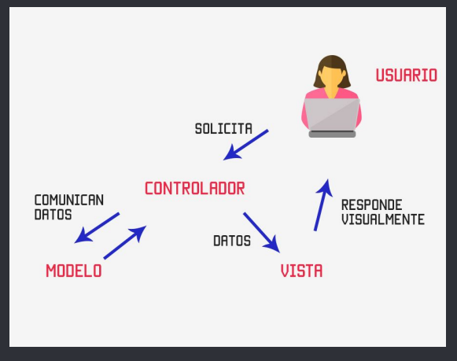
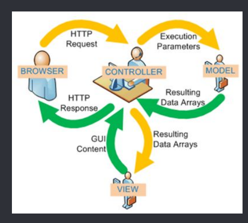
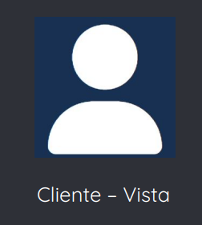
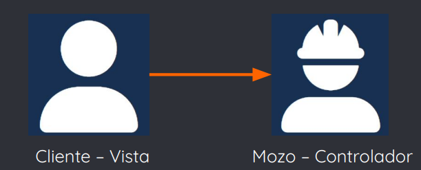
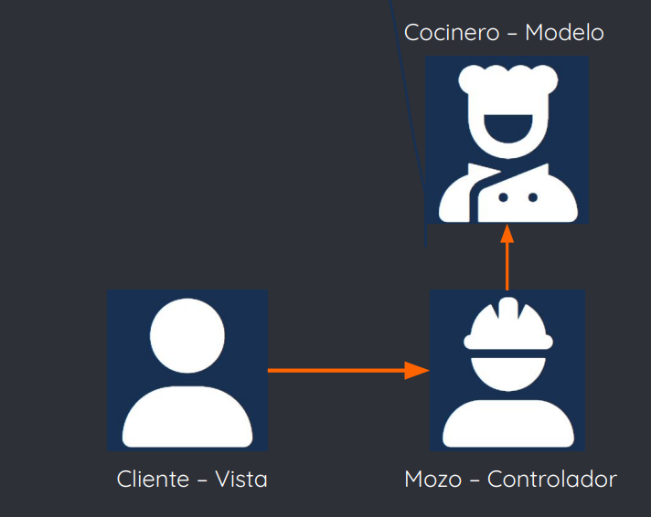
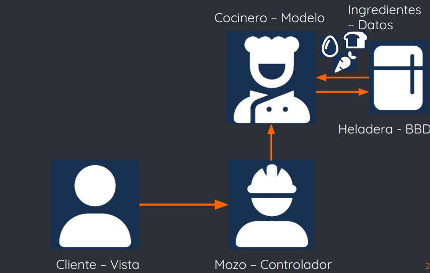
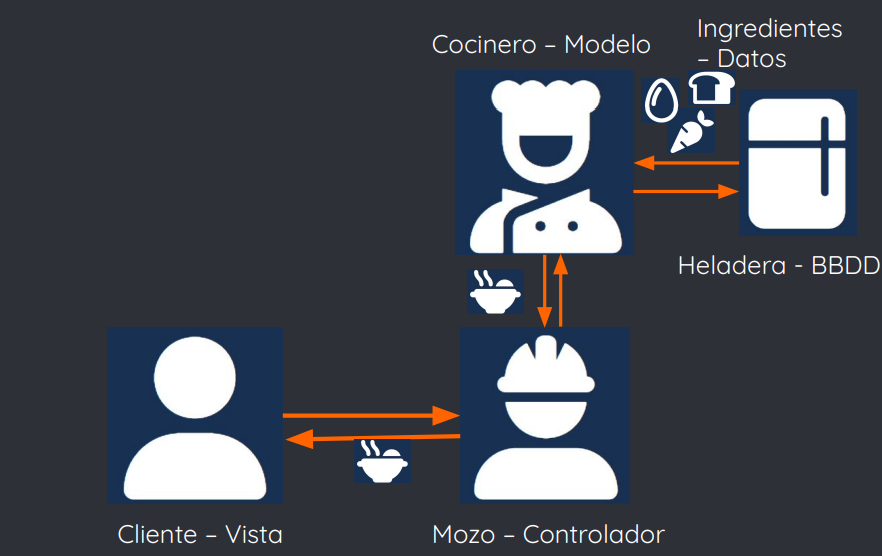
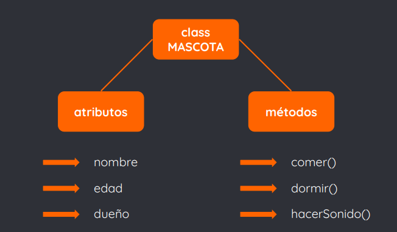
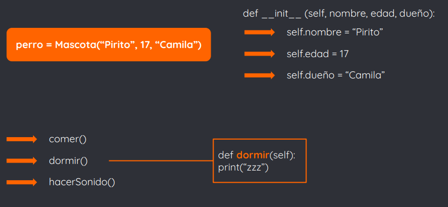
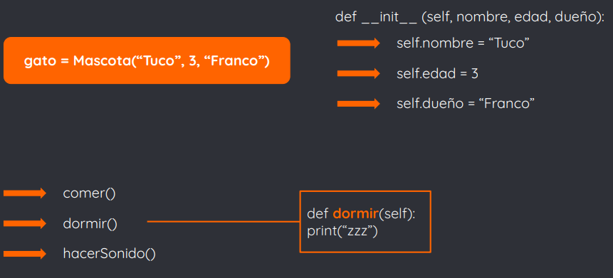

Resumen
1. ¿Qué es MVC?
- Es un patrón de diseño de arquitectura de software que separa los datos de una aplicación, la interfaz de usuario, y la lógica de control en tres componentes distintos:
➔ Modelo, que contiene una representación de los datos que maneja el sistema, su lógica de negocio, y sus mecanismos de persistencia
➔ Vista, que refiere a la presentación de la información al usuario
➔ Controlador, que actúa como intermediario entre el Modelo y la Vista, gestionando el flujo de información entre ellos y las transformaciones
- Este patrón enfatiza una separación entre la lógica de negocios y su visualización
- Esta "separación de responsabilidades" (o en capas) proporciona una mejor división del trabajo y una mejora de mantenimiento
- Además, permite el escalamiento de la aplicación
- Sin embargo, la separación de conceptos en capas agrega complejidad al sistema
- Este patrón enfatiza una separación entre la lógica de negocios y su visualización
- Esta "separación de responsabilidades" (o en capas) proporciona una mejor división del trabajo y una mejora de mantenimiento
- Además, permite el escalamiento de la aplicación
- Sin embargo, la separación de conceptos en capas agrega complejidad al sistema

2. Responsabilidades de cada capa
Modelo:
- Acceder a capa de almacenamiento de datos
- Ser independiente del sistema de almacenamiento
- Definir reglas de negocio (funcionalidad)
- Registrar las vistas y los controladores del sistema
Vista:
- Recibir datos del modelo
- Mostrar datos al usuario
- Tener un registro del controlador asociado e instanciarlo cuando sea necesario
Controlador:
- Recibir eventos de entrada
- Contener reglas de gestión de eventos, las cuales generalmente suponen hacer peticiones al modelo y/o a la vista
3. Flujo de control

1) Usuario interactúa con la interfaz, por ejemplo, clickeando un botón o un enlace
2) El controlador recibe, por parte de la vista, la notificación de acción solicitada por el usuario. Luego gestiona el evento que llega a través de un handler (gestor de eventos) o callback.
3) El controlador accede al modelo, actualizándolo; dicho cambio se corresponde a la acción solicitada por el usuario
4) El controlador delega a la vista desplegar la información al usuario. La vista obtiene sus datos del modelo para generar la interfaz apropiada para el usuario donde se refleja los cambios
5) La interfaz de usuario espera nuevas interacciones del usuario, comenzando el ciclo nuevamente
4. Ejemplo MVC
Supongamos que un cliente va a un restaurante. El cliente no hará su propia comida, sino que esperará a que el mozo tome su pedido

Cuando viene el mozo, toma nota del pedido del cliente. El mozo no preparará el plato, sino que le delegará la tarea al cocinero

Ahora el mozo le delega el pedido al cocinero, el cual cocinará el plato para el cliente, pero necesitará de ingredientes

El cocinero consigue los ingredientes de la heladera y cocina el plato solicitado por el cliente

El cocinero termina el plato y se lo da al mozo. Ahora el mozo lo debe llevar hasta la mesa del cliente que lo había solicitado

Otro ejemplo es el mecanismo para manejar un auto.
Podemos separar el auto en tres partes principales:
- Volante, frenos, palancas, paneles, etc: vista (UI)
- Motor: controlador (mecanismos)
- Gas o petróleo: modelo (almacenamiento)
5. MVC en desarrollo web
El patrón MVC facilitará el desarrollo web de la misma forma que facilita el desarrollo de software
- Nos proporciona un claro entendimiento de dónde, cuándo y con qué queremos que interactúe nuestro usuario, además de qué queremos que vea y cómo responderemos a sus solicitudes
- Como vimos anteriormente, el propósito general de usar MVC es la separación de la capa de negocio de la interfaz, lo cual nos trae numerosas ventajas para el desarrollo web
- Rápido despliegue de nuevas funcionalidades: podemos desarrollar nuevos módulos en el back sin afectar el entorno web de nuestra app
- Ahorra tiempo y dinero en el rediseño: simplemente cambiamos la vista, sin afectar el manejo de datos
- Múltiples vistas sin repetición de código: podemos crear roles de usuario o permisos varios sólo restringiendo el modelo o las bases de datos
- Presentación de información sin cambios: podemos proteger los cambios indeseados en la base de datos por parte de usuarios, permitiendo que sólo modifiquen la parte del front
También trae ventajas para el desarrollador web:
- Se pueden conectar múltiples vistas a un sólo modelo, sin interferir con el modelo
- Mejor división del trabajo y de especializaciones en el equipo de desarrollo
- Técnicas asíncronas, esto permite crear sitios web más rápido
- En un principio, la arquitectura MVC se implementó principalmente en el lado del servidor, con el cliente solicitando actualizaciones a través de formularios o enlaces, y recibiendo vistas actualizadas para mostrar en el navegador
- Hoy en día mucha de la lógica se envía al cliente con la llegada de los almacenes de datos del lado del cliente, y los HttpRequests permiten actualizaciones parciales de la página
En el código, veremos que:
- El modelo de datos estará incluido en una base de datos, manejando con lenguajes backend
- El código de control estará escrito en JS o HTML
- La interfaz estará escrita en HTML y CSS
- En el desarrollo web, utilizaremos herramientas que aplican el patrón MVC para facilitar el desarrollo
- Estas herramientas son llamadas frameworks
- Un framework es un esquema o marco de trabajo que ofrece una estructura base para elaborar un proyecto con objetivos específicos
- Se lo puede pensar como una especie de plantilla que sirve como punto de partida para la organización y desarrollo de software
- Utilizar un framework permite agilizar los procesos de desarrollo
- Puede simplificar (y mucho) una tarea o proceso
- Evita tener que escribir código de forma repetitiva
- Asegura buenas prácticas y consistencia del código
- Un framework es por tanto un conjunto de herramientas y módulos que pueden ser reutilizados para varios proyectos
Los frameworks web más utilizados son:
- Laravel (PHP)
- Angular (Javascript)
- VueJS (Javascript)
- Django (Python)
- Flask (Python)
- Ruby on Rails (Ruby)
- Estudiaremos el framework Flask con Python
- Flask es un microframework escrito en Python que permite crear aplicaciones web rápidamente y con un mínimo número de líneas de código
- Proporciona herramientas y funciones útiles que hacen que crear aplicaciones web en Python sea más fácil
- Ofrece a los desarrolladores flexibilidad, es extensible y no fuerza una estructura de directorio
- Para aprender Flask, vamos antes a estudiar algunos conceptos sobre el paradigma de la programación orientada a objetos
6. Breve introducción al concepto de Objeto (Programación Orientada a Objetos)
- Es un paradigma de programación, donde el códig se organiza en unidades llamadas clases, de las cuales se crean objetos que se relacionan entre sí
- Este paradigma busca que representemos las cosas de la vida real en código a través de objetos
- Los objetos que definimos para nuestros algoritmos deben ser independientes, no deben exponer sus detalles y deben poder integrarse con otros objetos
- Veremos unas definiciones de los principales conceptos aplicados en este paradigma:
Clase: modelo o plantilla a partir de la cual se estructuran datos. Definen atributos y métodos
- Objeto: instancia de una clase. Es una unidad dentro de un programa, y tiene datos (atributos) y comportamiento (métodos). Son creados a partir de las clases
- Atributo: es una propiedad o característica de un objeto
- Método: es una funcionalidad, acción o comportamiento de un objeto
- Constructor: es un método que se ejecuta automáticamente al instanciar una clase. Su finalidad es inicializar el objeto, asignando valores a sus atributos y opcionalmente ejecutando algunos de sus métodos
Por ejemplo, supongamos una clase Mascota
- Tiene como atributos nombre, edad y dueño, es decir, son las propiedades de nuestra Mascota
- El constructor de Mascota inicializará los tres atributos mencionados
- Puede comer, dormir y hacer ruido, estos son nuestros métodos o el comportamiento de nuestra Mascota
- Dos instancias de Mascota serán perro y gato, cada uno con datos específicos
- Decimos que perro y gato son objetos



Hay muchos conceptos relacionados al paradigma de Objetos
- Respeta 4 pilares: abstracción, encapsulamiento, herencia y polimorfismo
- Los objetos se comunican entre sí, a través de mensajes que se envían (objeto-mensaje)
- Debe respetar ciertos principios (como SOLID)
- Hace uso de patrones de diseño
- La programación orientada a objetos, bien hecha, disminuye errores, propone la reutilización de código y lo hace más escalable
Nosotros nos quedaremos con los conceptos vistos en las diapositivas anteriores
- Nos interesa saber que la programación orientada a objetos es un paradigma que utiliza la comunicación entre objetos para llegar a una solución
- Un objeto es una abstracción de un ente de la vida real, el cual tendrá atributos (características) y métodos (comportamiento o acciones)
- Los atributos y métodos comunes a un cierto tipo de objeto se agrupan en clases, las cuales son plantillas a partir de las cuales se instancian objetos